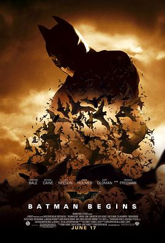

8.6
蝙蝠侠：侠影之谜
Batman Begins
2005
英国
评分 8.6
导演:
克里斯托弗·诺兰
演员:
克里斯蒂安·贝尔 / 迈克尔·凯恩 / 连姆·尼森 / 凯蒂·霍尔姆斯 / 加里·奥德曼 / 基里安·墨菲 / 汤姆·威尔金森
类型:
剧情,动作,科幻
剧情简介
夜幕笼罩哥谭市，在一次歌剧演出后，少年布鲁斯·韦恩在庄园外见证父母被歹徒残忍枪杀。那一刻，他心中的恐惧与愤怒交织成了隐秘誓言。多年后，他放弃豪门生活，行走亚洲边陲，接受神秘暗影忍者联盟的训练。他在雪原中奔跑，被冷风拍打，双拳在岩壁间锤响。直到发现，这支组织想毁灭家乡——他毅然决然回到哥谭。回到这座腐败城市，布鲁斯化身为蝙蝠侠。他钻进庄园的暗室，那盏“蝙蝠信号”在夜空中亮起。与此同时，学院出身的心理医生克兰博士利用恐惧毒剂在黑帮中横行，暗影联盟的真领导出现，背后是一个让城市濒临崩溃的计划。手握蝙蝠战车“翻斗车”、披着暗影披风，他与忠诚的阿尔弗雷德及工程奇才卢修斯·福克斯并肩作战。影片摆脱浮夸特效，刻画出一个“没有超能力、只是有意志力”的普通人如何成为英雄。恐惧成为他的武器，也成为他的敌人。夜色中他守望高谭，划破黑暗。与此同时，城市仿佛一台巨型机器，运转着罪恶与沉默。蝙蝠侠的出现，既像一道裂缝，也像一道出口——让这座城市看到希望。这不是单纯的英雄降临，而是重生：一个男人放弃复仇，转而守护；一个黑暗中生出的符号，成为光明的前兆。影片张力十足、氛围厚重、动作精准，每一次飞跃、每一次暗影潜伏，都让人屏息。